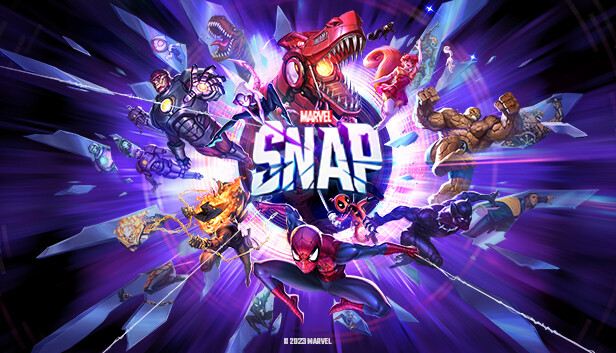
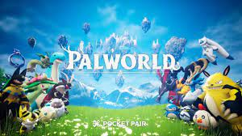

2021 - 2025
2021
2022
Marvel Snap
Played By: Jaymian Bustos
Description:
As someone who grew up playing various card games such as YU-GI-OH, Magic the Gathering, Hearthstone, etc. Marvel Snap brought back the magic of card collecting and deck building in a fast, inexpensive manner unlike any virtual card game before. Battling against friends, sharing our ideas on decks we could make with the next new set of cards, or finally pulling the card we need to complete a certain archetype brought me back to my childhood where nothing mattered and my biggest worries of today were miles away.
2023
Baldur's Gate 3

Played By: Jaymian Bustos
Description:
My first and only time playing Dungeons and Dragons was an absolute experience cut short due to the pandemic of 2020-2021. Baldur's Gate 3 was the game that had reignited that passion by making the DnD experience you could play at home, with friends, or by yourself. The sheer amount of depth the game has is unlike any game I have played before. No run is exactly the same and the branch of outcomes that can occur seem near infinite as factors of luck may or may not be on your side. This game also offered sense of ease compared to the vast amount of competetive games I was into at the time. I could take the game at my own pace and explore the world the game had to offer without worrying about winning or losing. It is a game that truly deserved game of the year setting a new standard for myself and others when it comes to the quality of a game compared to triple A titles.
2024
Palworld (PC)
Developer: Pocket Pair
Played By: Danny Dao
Description:
Palworld, a game that seemingly brought back memories of dreams of playing Pokemon in a 3D interactive environment where battles were not turn based and instead run in real time. Palworld brought back friends that I hadn't talked to for a long time as we all messaged each other asking to play this game. There was controversy all throughout the game signifying the use of AI and what that means for video games as a whole. What matters more, the final product or the work behind the product? Questions were asked all around my group of friends, but at the end of the day, the game was something that the public had wanted for awhile and it turned out to be loads of fun. Catching pals and creating "friendships" with them were something that we were all longing for.